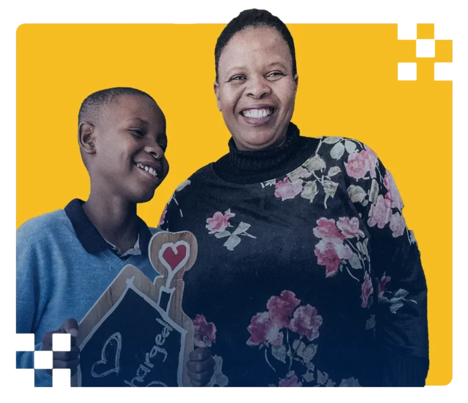

Ronald McDonald House Charities
Keeping families close
At Ronald McDonald House Charities South Africa, we are dedicated to keeping families close to their children during critical care. Our mission is to provide accommodation and family-centered support that eases the emotional and financial strain of having a hospitalised child. We believe that every family deserves comfort and care during difficult times, and we are committed to making a positive impact on the lives of those we serve.
“We provide accommodation for families with sick children to stay at little to no cost while their child is receiving critical medical care at the hospital.”
Our Impact
Supporting with compassion
Opened in 2012, Ronald McDonald House Charities South Africa exists to keep families close to their children during critical care. We provide accommodation and family-centered support that ease the emotional and financial strain of having a hospitalised child. Our programs and initiatives are designed to meet families where they are and offer comfort in every form of care.
Core Programs
Ronald McDonald House Accommodation for families with hospitalised children, reducing the emotional and financial strain. Ronald McDonald Family Rooms In-hospital spaces offering respite and comfort to caregivers close to their children. Local Programmes e.g., Lactation Centres, nutrition support and psycho social support, addressing gaps in maternal and neonatal health.
Our work is made possible through the generosity of our donors, volunteers and partners including McDonald’s South Africa, government health departments, corporate partners and individual supporters. We are committed to keeping families close to their children during critical care and providing comfort in every form of care.
RMHC South Africa is an independent non-profit organisation, governed by a Board of Directors, and operated by staff and volunteers. RMHC South Africa was established in 2012 and is part of the global network of Chapters that keep families with sick children close to each other and the medical care they need through programs like the Ronald McDonald House™ and Ronald McDonald Family Room program. Over 94 percent of leading hospital partners agree that RMHC reduces stress and financial burden for families, and helps their hospitals deliver the best care possible.
Our work is made possible through the generosity of our donors, volunteers and partners including McDonald’s South Africa, government health departments, corporate partners and individual supporters. We are committed to keeping families close to their children during critical care and providing comfort in every form of care.